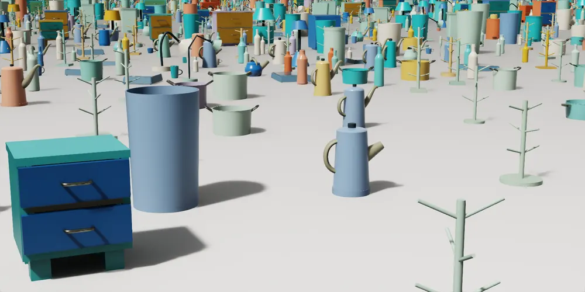
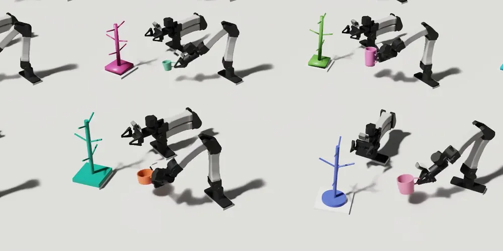

Put pot on cooktopFour physical rolloutsDifferent pots, same simulation-trained policy
Simulated data
Assets and poses
Real robot
No per-object tuning
Sim-to-real policy learning
SimScale
Agentic Simulation Data Scaling for Sim-to-Real Policy Learning
Simulation at scale
See the results ↓
01 / Real-world results
SimScale policies generalize zero-shot to the real world.
Policies trained only in simulation are tested on physical objects without object-specific fine-tuning.
Hang mug on treeFive physical objectsOne uninterrupted sequence across the object set
Put charger in drawerFour physical rolloutsDifferent chargers, same simulation-trained policy
02 / Asset generation
SimScale generates realistic and diverse simulation assets.
Each task includes multiple object instances with different shapes, sizes, and appearances.
03 / Demonstration generation
SimScale produces demonstrations on diverse assets and poses.
Successful task trajectories are generated across the object set and valid starting poses.
DMG simulation demonstrationPut charger in drawerInsertion, drawer closure, and release
DMG simulation demonstrationHang mug on treeHook engagement, release, and resting mug
DMG simulation demonstrationPut pot on cooktopPlacement, release, and resting pot
04 / Simulation evaluation
SimScale policies generalize in simulation.
Policies are evaluated on simulation assets and poses held out from training.
Evaluation assets are reserved before policy training.
Policies are tested on generated families, curated assets, and real-object twins.
Repeated rollouts measure whether the full manipulation task succeeds.
05 / More real-world results
Uncut real-world rollouts.
Complete task executions from the supplied source exports, shown at their original 8× presentation speed.
Put pot on cooktop
Hang mug on tree
Put charger in drawer
06 / Method
How does it work?
SimScale turns a short asset description and one human demonstration collected in simulation into a training set that spans object geometry and pose.
From prompt to assets
Input
Asset description
→
“Mugs with handles and branched racks”
Process
Parameterized generator
→
AssetEngine turns category variation into explicit controls such as dimensions, part variants, dependencies, and articulation.

Intermediate stages
- 01Search examplesCollect real-world references
- 02Plan variationIdentify category structure
- 03Author generatorDefine parameters and constraints
- 04Coverage criticCheck the category range
- 05Geometry validatorCheck simulation readiness
- 06Sample + splitCreate train and held-out assets
From demonstration to deployment
Input
One source demo
→
A single human trajectory collected in simulation.
Process
Geometry-aware task program
→
DemoEngine adapts the shared skill to each asset, then expands successful runs across poses.

Intermediate stages
- 01Inspect demoRecover grasp and motion priors
- 02Decompose taskIdentify semantic stages
- 03Write programCompose robot tools and targets
- 04Seed validationRevise with rollout feedback
- 05Specialize assetsAdapt targets and task logic
- 06Expand posesRun DexMimicGen and validate
Data outputAccepted trajectoriesRGB + robot state + actions
→
TrainVisuomotor policyStandard imitation learning
→
Policy outputZero-shot transferHeld-out simulation + unseen real objects
Inside the engines
The overview above shows what enters and leaves each stage. The details below show how each engine produces those outputs.
AssetEngine
Build a category, not one object.
AssetEngine writes one parameterized procedural generator whose controls describe meaningful variation across an object category.
- SearchCollect diverse real-world examples and identify task-relevant variation.
- AuthorEncode dimensions, part choices, dependencies, joints, and semantic metadata.
- ReviewA coverage critic checks the category range; a geometry validator checks simulation readiness.
- SampleCompile accepted parameter settings and split assets into training and held-out sets.
OutputDiverse, physically plausible simulation assets
DemoEngine
Adapt the skill across geometry and pose.
DemoEngine turns the reference trajectory into a reusable task program, then uses simulation feedback and robot tools to make it work across the asset family.
- DecomposeRead the demonstration as semantic stages such as grasp, handover, insert, and retreat.
- ProgramCompose motion planning, gripper control, collision checking, and object-centric targets.
- SpecializeRevise targets or task logic for each geometry and retain only successful executions.
- ExpandUse DexMimicGen to transform accepted trajectories across sampled object poses.
OutputDiverse, successful demonstrations across assets and poses
Project summary
Diverse assets. Generated demonstrations. One policy tested on objects it has not seen before.